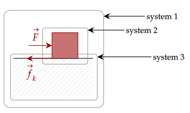
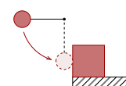
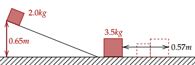

Previously, we have derived and proven that friction (specifically kinetic friction) is a non-conservative force. In other words, there is no potential energy associated with friction. Even then, it can still do work in the form of external work acting on a system.
We first analyze a specific scenario, let's say that of a box being pushed by some force at constant velocity. There are three systems of note, being that of the box, the ground, and the system containing the two.

We first analyze the system of the box. There is no net force acting on the box, given that it is moving at constant velocity, so there should be no net work. This means there is no change in kinetic energy by the Work-Energy theorem. There is also no potential energy within the system.
Here, the external work is done by two forces, being the work of the force and that of kinetic friction.
Let the box move a displacement . We only care about finding the value of the work done by friction here, so we solve for it.
Now, note that the force 's magnitude must be equal to that of kinetic friction since there is no net force. Thus, we have the following equation.
Notice that this means that for a system, the definition of work as the force times distance outputs the wrong answer. This is because that definition only works for a particle, without internal energy.
In reality, friction causes a change in internal energy which can be attributed to the heating of the box. This change in internal energy can't be calculated unless we have a more complicated version of the frictional force.
Question 1
(HRK Q13.9) An automobile accelerates from rest to a speed v, under conditions such that no slipping of the driving wheels occurs. From where does the mechanical energy of the car come? In particular, is it true that it is provided by the (static) frictional force exerted by the road on the car?
Answer
Take the system of the automobile alone. There is a net external force acting on the car, being the friction on the wheels.
The external work here is frictional work.
We can't exactly rule out the work by friction given that it isn't exactly equal to the displacement of the wheels time the frictional force; some portion of the internal energy is lost. However, generally, the mechanical energy here mainly comes from the loss of internal energy (by the combustion of fuel, for example).
The same problem arises in the system of the ground only. Here, since the ground doesn't move, the only two parts are the internal energy and the frictional work.
The above work done by friction is exactly equal to the work done by friction in the system of the box, which we can't calculate. We have to resort to the system of the box and the ground, where the force done by friction is just an internal force.
There is no potential energy related to the nonconservative external force, so it does work; further, the kinetic energy of the system doesn't change given that the object remains at constant velocity.
Exercise 1
(HRK E13.11) A 4.26-kg block starts up a 33.0° incline at 7.81 m/s. How far will it slide if it loses 34.6 J of mechanical energy due to friction?
Answer
Take the system of the block and incline. There is potential energy, and it reaches its peak when it goes to rest. The mechanical energy lost in the internal energy of the system; no external forces act on the system.
Plugging in the values, we have a maximum height of 2.283m. Using trigonometry, we get that the distance along the incline is 4.19m.
Problem 1
(HRK P13.2) A small object of mass = 234 g slides along a track with elevated ends and a central flat part, as shown below. The flat part has a length = 2.16 m. The curved portions of the track are frictionless; but in traversing the flat part, the object loses 688 mJ of mechanical energy, due to friction.
The object is released at a height = 1.05 m above the flat part of the track. Where does the object finally come to rest?
Answer
Take the system of the object and track. We first compute for the total initial mechanical energy.
Computing the initial mechanical energy, the amount of energy is 2.41J. Given that 0.688J is lost, a total of 3.50 trips will occur. This meas the object will stop in the center of the rough flat surface.
Exercise 2
(HRK E13.15) A steel ball of mass 0.514 kg is fastened to a cord 68.7 cm long and is released when the cord is horizontal. At the bottom of its path, the ball strikes a 2.63-kg steel block initially at rest on a frictionless surface.

On collision, one-half the mechanical kinetic energy is converted to internal energy and sound energy. Find the final speeds.
Answer
Take the system of the block, ball, ground, and Earth. Set initial potential energy as zero at the height where the collision occurs. The first thing we need to do is get the speed of the ball just before it hits the mass. Using the conservation of energy, we have the following.
We write the law of conservation of momentum. Let be the bigger mass.
Now, the final energy of the system (which is the kinetic energy of the two parts) afterwards is equal to half of the initial kinetic energy.
We now have two equations and two unknowns, so we can solve for them. This is quite brutal algebra, and has been left to the omniscient reader. We get that the answer is 0.219m/s and 0.981m/s for the block and ball respectively.
Problem 2
(HRK P6.20) A 2.0-kg block is released from rest at the top of a frictionless inclined plane of height 0.65 m. At the bottom of the plane it collides with and sticks to a block of mass 3.5 kg. The two blocks together slide a distance of 0.57 m across a horizontal plane before coming to rest. What is the coefficient of friction of the horizontal surface?

Solution
We first get the speed of the block on the ramp as it reaches the bottom. Let the system be of the block and the Earth, the potential energy be zero at the ground.
Great, now we will use the conservation of momentum to get the initial velocity of the two blocks as they collide. We will call the bigger block as , as usual.
The speed above effectively transforms the two masses into one particle, and thus the work-energy theorem holds. We can then find the coefficient of friction, noting that the work done by friction causes the particle to go to rest.
Giving a coefficient of friction of 0.15.